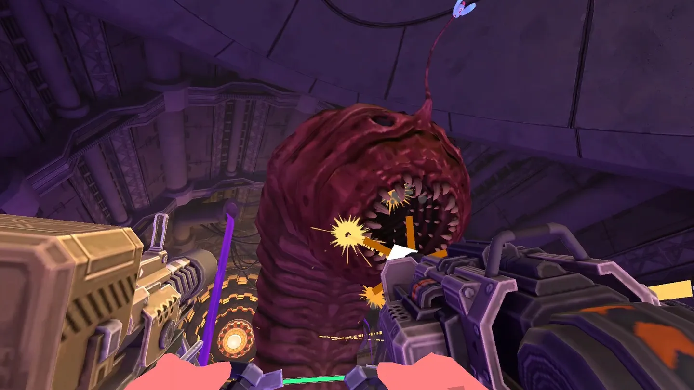
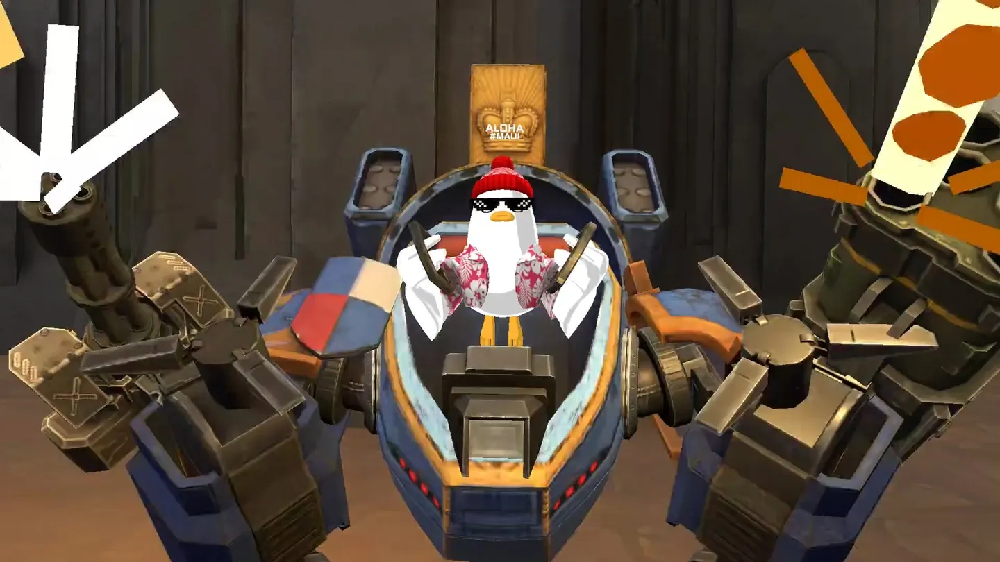
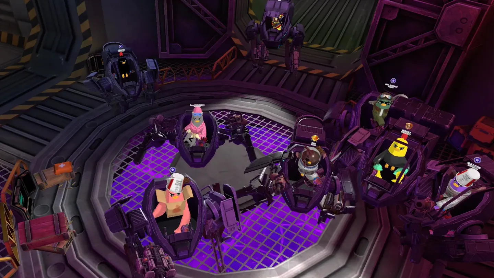
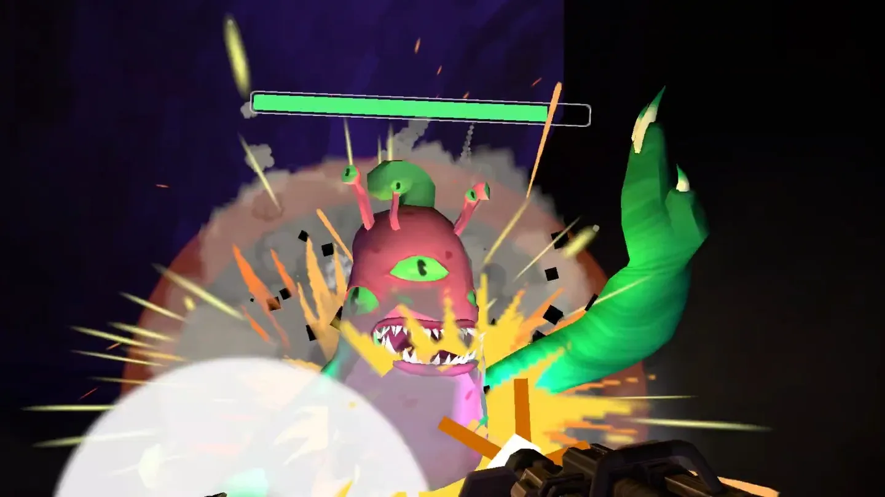

개요
부품을 모아 나만의 로봇(Waroid)을 조립하고, 좀비 치킨들과 싸우거나 다른 플레이어와 케이지에서 맞붙는 VR 슈팅 게임입니다. Meta Quest 2/3/3S/Pro를 지원하며, 손으로 직접 무기를 다루는 VR 특유의 조작감과 파밍·꾸미기 요소를 함께 담았습니다.




주요 기능
- 부품 조합으로 나만의 로봇을 만드는 커스터마이징 시스템
- 좀비 치킨을 상대하는 PvE 던전 / 다른 플레이어와 맞붙는 PvP 케이지
- 낚시, 보스 레이드 등 협동·파밍 컨텐츠
- VR 컨트롤러 기반 무기 조작 및 능력 조합
- 채널당 최대 13인 동시 접속 실시간 멀티플레이
맡은 역할 & 기여
- Photon Fusion 2 Shared Mode 기반 멀티플레이 네트워크 환경 구축 (클라이언트 4인 팀)
- 마스터/비마스터 클라이언트 간 상태 동기화 설계 (플레이어 이동, 전투 이펙트, 컨텐츠 진행 상태)
- 인게임 전투 시스템 개발
- 낚시, PvP, 보스 레이드 컨텐츠 개발
- Unity MCP + Claude Code 연동으로 AI 기반 코드 개선 파이프라인 구축
- Claude 하네스 기반 개발자 에이전트 구축 — 테스트 코드 생성, 유닛 테스트 실행, Jenkins 연계 빌드·배포 자동화
기술적 도전 & 해결
처음으로 실시간 네트워크 게임을 개발한 프로젝트였습니다. 초기에는 클라이언트 간 캐릭터 움직임과 전투 이펙트가 어긋나 보이는 문제가 반복되었는데, 원인은 두 가지였습니다.
첫째, 네트워크 지연 시간을 고려하지 않고 수신한 위치를 그대로 반영하고 있어 지연이 커질수록 움직임이 끊겼습니다. Fusion의 NetworkTransform을 모든 오브젝트에 붙이면 관리해야 하는 네트워크 리소스가 그만큼 늘어나기 때문에, 동기화가 필요한 오브젝트에 한해 지연 시간 기반 위치 보간을 코드로 직접 구현해 지연이 있어도 움직임이 자연스럽게 보이도록 개선했습니다.
둘째, VR 환경에서 렌더링 부하가 높아지면 프레임이 떨어지고, 프레임이 떨어지면 네트워크 틱 처리도 밀리면서 쓰로틀링이 발생했습니다. 동기화 프로퍼티 수를 최소한으로 줄이고, 플레이어와의 거리(View Distance)에 비례해 오브젝트 렌더링을 on/off하는 기능을 적극 활용해 프레임을 안정시키자 네트워크 지연도 함께 줄어들었습니다. 이 최적화 작업에는 Unity MCP와 Claude Code를 연동해 병목 지점을 분석하고 개선안을 빠르게 검증하는 방식을 함께 활용했습니다.
회고
실시간 네트워크 게임은 네트워크 코드만의 문제가 아니라, 클라이언트 리소스 전반이 동기화 품질에 직결된다는 것을 배운 프로젝트입니다. 또한 Claude 하네스로 테스트와 빌드·배포를 자동화하면서, 반복 작업을 에이전트에 맡기고 팀이 컨텐츠 개발에 집중할 수 있는 개발 환경을 직접 만들어 본 경험이 인상 깊었습니다.